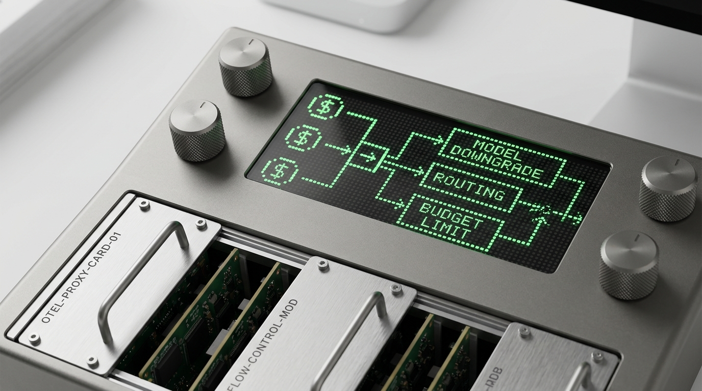

RANK #01 · FLAGSHIP GATEWAY SCORE: 96 / 100OTel LLM Budget Enforcer & Cost-Fallback Proxy
Multi-tenant async FastAPI gateway enforcing sliding-window Decimal token budgets, semantic vector caching (cosine ≥ 0.92), runaway agent loop circuit breaking, and automatic cheaper-model failover with OpenTelemetry spans.
 RANK #02 · SELF-HEALING CI/CD
SCORE: 94 / 100
RANK #02 · SELF-HEALING CI/CD
SCORE: 94 / 100
Autonomous CI/CD Log Triage & Self-Healing PR Engine
Streams multi-megabyte CI build logs into an in-memory DuckDB analytical engine, isolates crashing frames via AST slicing (98.4% token compression), filters transient flakes, and opens AST-verified healing Pull Requests.
 RANK #03 · VECTOR SYNC DAG
SCORE: 93 / 100
RANK #03 · VECTOR SYNC DAG
SCORE: 93 / 100
Autonomous AI Memory & Vector RAG Sync Engine
Continuous bi-directional RAG synchronization between Notion databases and Airtable CRM into vector stores. Features canonical schema normalization, SHA-256 content-hash deduplication, and 768-dim vector upserts.
 RANK #04 · MULTIMODAL RPA
SCORE: 91 / 100
RANK #04 · MULTIMODAL RPA
SCORE: 91 / 100
Zero-API Desktop RPA & Vision Execution Engine
Drives legacy desktop GUIs without APIs by locking Win32 per-monitor DPI awareness, grounding UI controls on a normalized 0–1000 grid via Vision LLMs, and verifying every input with closed-loop perceptual frame diffing.
 RANK #05 · VISUAL QA ENGINE
SCORE: 89 / 100
RANK #05 · VISUAL QA ENGINE
SCORE: 89 / 100
Autonomous Visual QA & DOM/Layout Anomaly Detector
Eliminates false-positive pixel diffs by combining headless Playwright multi-viewport sweeps (1440w / 768w / 375w) and deterministic DOM rectangle intersection math with multimodal Vision-LLM severity grading.
 RANK #06 · HYBRID WATERFALL
SCORE: 88 / 100
RANK #06 · HYBRID WATERFALL
SCORE: 88 / 100
Hybrid B2B Waterfall Enrichment & Multi-Source Engine
Couples a 14-node n8n orchestration DAG with a Python FastAPI/SQLite extraction worker. Executes a cost-ordered waterfall: 0.5ms SQLite TTL cache → direct DOM tech-stack fingerprinter → API fallback → Pydantic ICP scoring.
 RANK #07 · FAULT-TOLERANT BUS
SCORE: 86 / 100
RANK #07 · FAULT-TOLERANT BUS
SCORE: 86 / 100
Self-Healing Webhook Dead-Letter Queue (DLQ) & Replay
Decouples high-volume webhook ingestion from downstream outages via a <8ms Redis LPUSH buffer (HTTP 202 Ack), exponential backoff with 30% random jitter, recursive secret redaction, and Redis SETNX idempotent replay.
 RANK #08 · STREAM ANALYTICS
SCORE: 85 / 100
RANK #08 · STREAM ANALYTICS
SCORE: 85 / 100
Real-Time Stream Sentiment & Z-Score Anomaly Engine
Asyncio stream processor with SHA-256 syndication deduplication, schema-ordered sarcasm & churn-intent classification via structured LLM outputs, and rolling Z-score velocity spike detection backed by indexed SQL rollups.
No matching blueprints found
Try searching with another architectural keyword or reset the category filters.